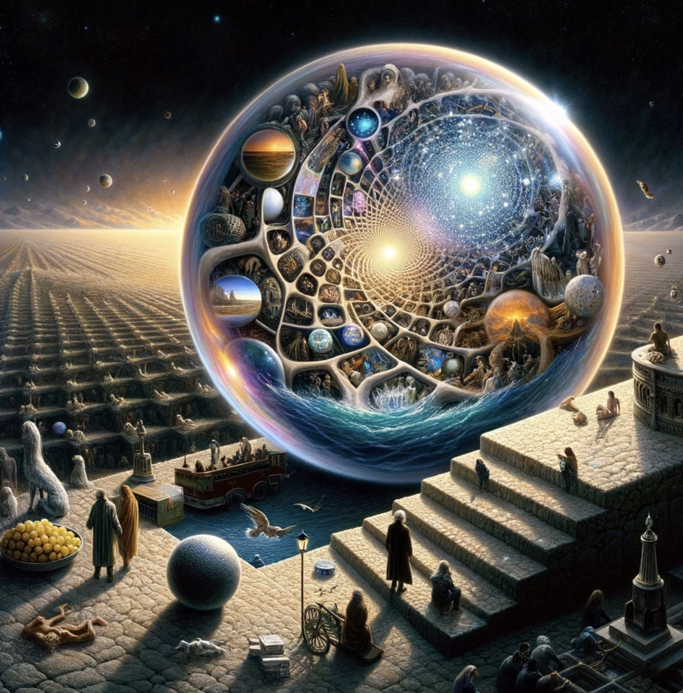
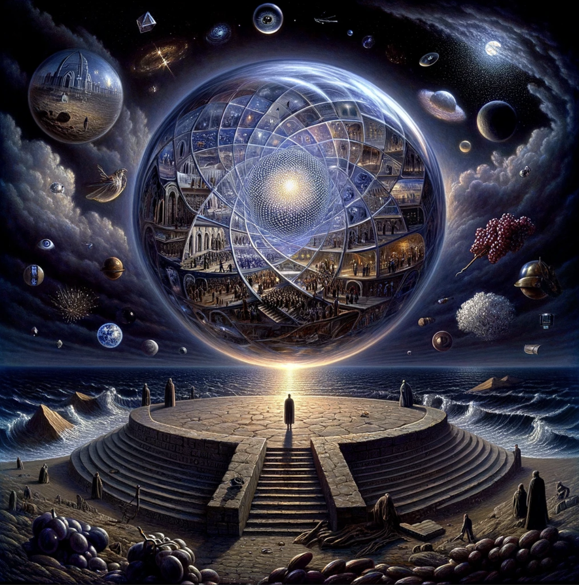
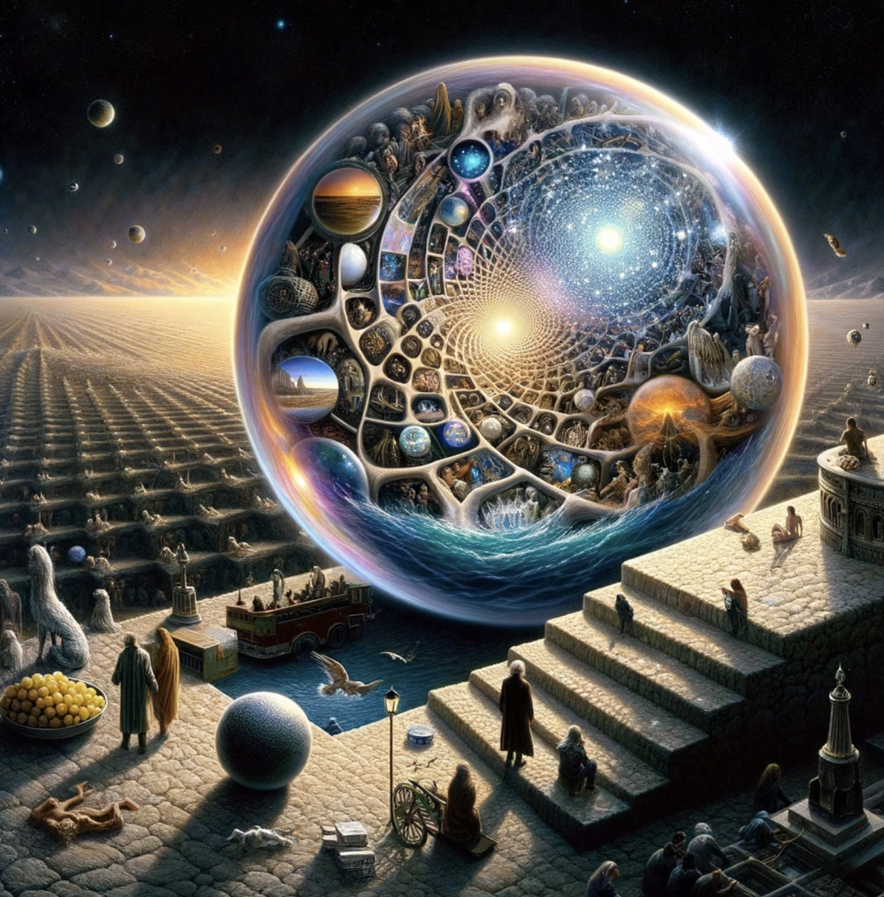
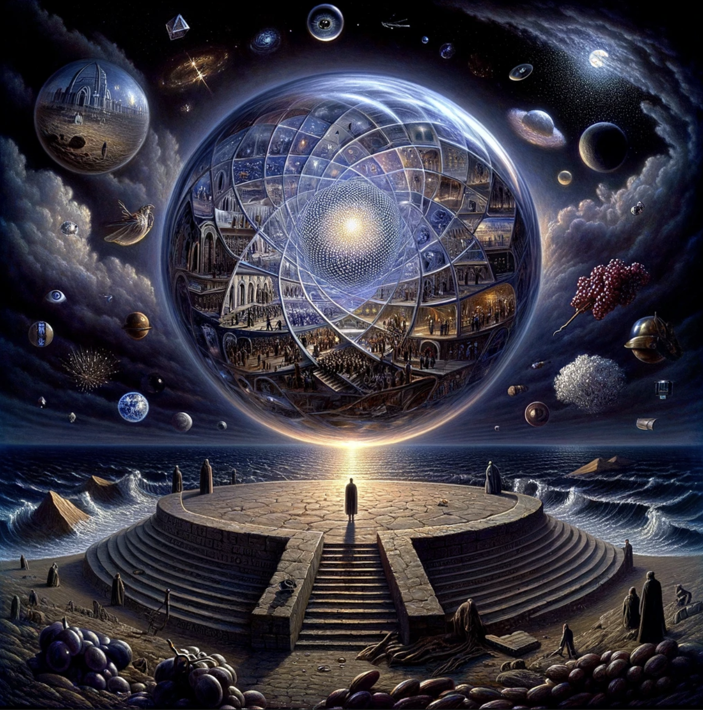
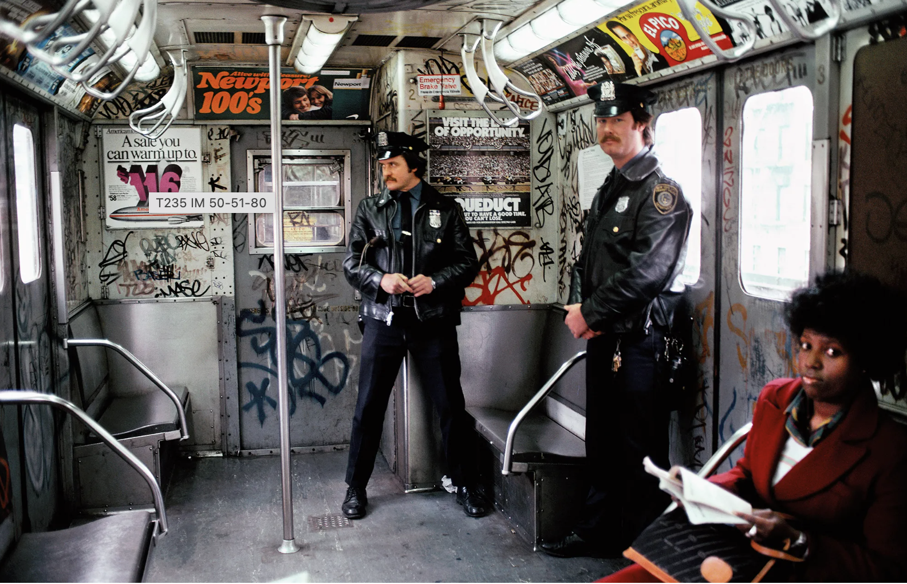
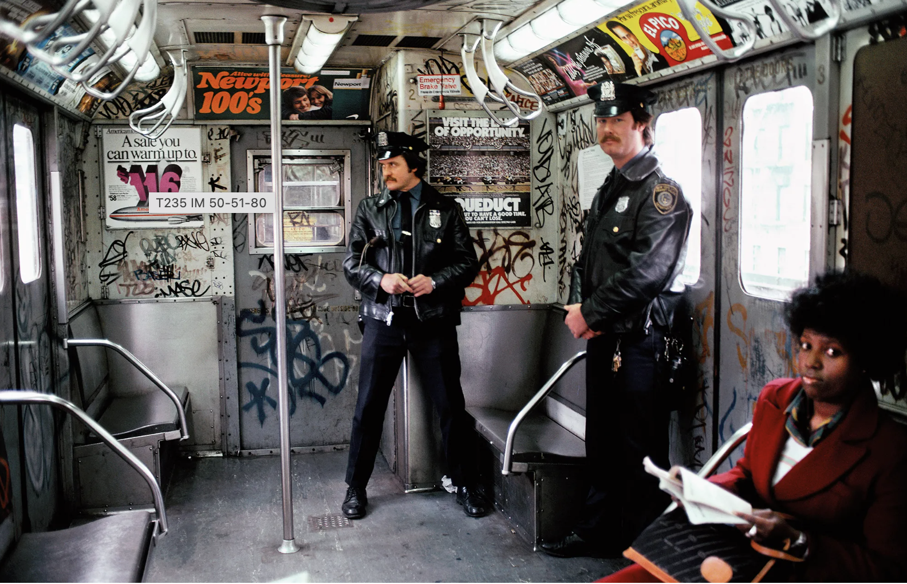

Narratives: World and Images
Words and Images as Narrative Structure 001
The concept of body archives is rather unorthodox compared to more traditional mediums such as archives constructed with language or images. Yet in comparison, the body archives seem more anchored and aligned to our ontological structures, embodying a raw truth and a brutal honesty that could be poetic and traumatic.
Based on Juliette Singh’s narratives in No Archives Will Restore You, I find the body archives to be closer to truth compared to traditional means. Linguistic narrations, very often full of metaphors, metonyms, anthropomorphisms that’s rhetorically heightened, transferred, and adorned, always retain a certain distance between the so-called truth, or the “things-in-themselves”. Photographic archives, on the other hand, objectify, turning people and events into things that can be possessed... “Ideologies create substantiating archives of images, representative images, which encapsulate common ideas of significance and trigger predictable thoughts, feelings. What is called a collective memory is not a remembering, but a stipulating” (Susan Sontag) In comparison, the body archive has its own brutal honesty, and it’s a history of events, memories and affect. Its innate qualities also correspond with the mechanisms of memories. “All memory is individual, unreproducible---it dies with each person”, so does the body, limited by its finiteness and concrete materiality. The author doesn’t even shy away from what goes into and out of the bodies, and she doesn’t avoid the uncanny, the unseemly, the inelegant, the twisted, even the disgusting aspects of bodies. Bodies don’t euphemize, and they aren’t curated or filtered.
The body archive is especially interesting in that it is located between the private (What is more intimate, private, and inviolable than one’s own body?), and something more open, porous, and boundless. Singh has explained this phenomenon by pointing out that the body’s archive is also an affective one, “filled up with foreign feelings and vibes that linger and circulate in space… likewise leave traces of ourselves and our own affective states”. (Juliette Singh, No Archive Will Restore You) She also made an important point concerning the non-singularity of bodies as in “…its vital entanglements with other kinds of bodies…” which is exemplified in the narratives of Singh’s shared experiences of eating disorders with another female scholar as well as in the excruciatingly intimate and beautiful moment of this friend’s yearnings to listen to the author’s narrations of giving birth to a new life, while she is on her own deathbed. The resonance of body archives could apparently also move beyond the human, as in the Inarticulate Trace section, the author mentioned the buffalo giving birth to a dead baby, as well as a poem concerning the bereft buffalo mother disappearing back into the herd and leaving behind her “slick dead thing”. The animal and the poet both experienced the same ontological crack, as the poet too, has given birth to something new, and leaving behind a history that leaves her unreconciled.
The section in the Ghost Archive where Singh narrated her traumas of being discriminated against is oriented around her experiences of “losing every single word I have learned”, “Again, my language vanishes”, “words and spit mingling with flesh and feeling” …The fact that trauma is beyond linguistic representation is located not only at the very immediacy during which it occurs but is also lingering in its belatedness. According to Cathy Caruth, “Retelling the stories of traumatic events can be seen as an attempt to strip away the affective power of the event.” The latency and dissociation of trauma disrupts one’s ability to fully understand or represent the experience, nor to take control of it through language and narration. Unconscious archives. The unconscious archive is like the contours of your second beating heart, that’s mostly invisible, consisting of memories and involuntary memories (mémoire involontaire). Sometimes the exact event is lost, but one is always left with a sensuous impression, that might release the captive form one day.
 



Words and Images as Narrative Structure 002
Graffiti art is generally produced at “non-places”, with the “non-place” defined as a space of transience where human beings remain anonymous and do not hold enough significance to be regarded as “places” in their anthropological definition. Such non-places do not build common references to a group, and the temporality associated with such sites tends toward a flattening sense of time, or time that’s out of joint. The MTA infrastructure is one of those places of transience that points to the present and future tenses. Perhaps it’s exactly its disassociation with fixed human relationships that invites the possibility of a “code-switching” in the form of graffiti art---manifestos that’s located at the old ruins of representation.
Graffiti art belongs to the category of “counter-production” art whose expression does not crystalize into a unifying form but is instead a proliferation of different lines of growth, living and thriving wildly outside gallery systems, museums systems and competition systems, abandoning traditional forms of productions, and seeking to escape a certain-world where the precious things in life are fixed properties ruled by production. The term “counter-production” dates from the early 1970s, or more precisely, 1972, when Alexander Kluge and Oskar Negt articulated such concepts, aiming to address “how the art world’s normative structures might be inhabited and resisted internally to their own normative logic by holding to the fragile utopianism of artistic practice as a different type of work while acknowledging that this promise is travestied and parodied by the ‘creativity’ of capitalism’s new spirit.” It’s doubtful that the graffiti artists have such meta-conceptions before their creation, yet their work -both in content and format, aligns with the spirit of counter-production.
The very word “grassroot art” itself resonates with plant metaphors such as “roots”, rootedness”, “groundedness”, “rhizomes”. In fact, the form of graffiti art, with their paradoxically controlled and wild, amateurish, and artistic lines and markings, resembles a bewildering multiplicity of stems and roots which may cross at any point to form a variety of connections or potentialities.
The archive and documentation of graffiti art is also a crucial point of investigation. Like a palimpsest, the graffiti could easily be rewritten, replaced, painted over by new artists. Haunted by the past, the graffiti also calls forth a new group of audience, and a new community. An example in the article would be how Henry Chalfant, the sculptor and subway commuter who was so taken with the graffiti-covered trains that he eventually befriended many writers and facilitated the movement’s growth by giving the artists access to his own collection of well-organized images. Preserving such art is preserving a communal space for dispersed, neglected, and isolated creative individuals to be united. Such communal space is a haven for “living poetic and visual exchanges”, more than the sum of their parts. The greatest irony is when the criminal documentation of graffiti art serves the purpose of a crucial visual archive. It reminds me of how in Roberto Bolano’s novels, the detectives’ investigation would correspond with the unveiling of certain literary trajectories. The political history (or the actuality) is never severed from a literary or artistic history (the potentiality).
In terms of technology and the internet circulation of graffiti art, it’s interesting to think about how the digital photos of such artworks could become more widely dispersed and viewed than the object itself. In fact, many of the graffiti artwork that we could potentially gain access to are the ones circulating online, which leads to the question --- does it matter that the source object can no longer be regarded as inherently greater than any of its copies, since we are already used to how objects are instantiated in ways that deny the necessity of the original. Does the “aura” of the original graffiti art matter?
 
